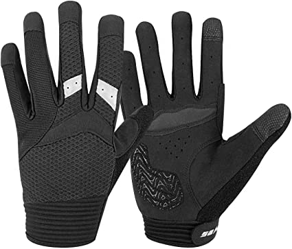

La bicicleta
La bicicleta es un medio de transporte y un deporte fácil de practicar, te hace sentir bien, no contamina, mejora la salud, no solo la salud física también la salud mental ya que permite hacer ejercicio al aire libre, es positivo para las articulaciones ya que el peso del cuerpo es amortiguado por el asiento de la bicicleta y las articulaciones y los cartílagos no soportan pesadas cargas.
Andar en bicicleta es el mejor medio de transporte ecológico que existe, no requiere combustible, usa tracción generada por el movimiento de los pies al pedalear, ademas no provoca ruido y ayuda a reducir los niveles de monóxido y dióxido de carbono, hidrocarburos y otras partículas que favorecen la contaminación del aire.
Accesorios para ciclistas
La bicicleta es un medio de transporte eficaz que permite realizar el traslado en distanciás medianas y cortas tres veces más rápido que caminando. Para usar la bicicleta de manera segura, se deben utilizar guantes, cascos, ropa reflejante, también es importante incluir luces traseras y delanteras, para ser visible a peatones y automovilistas.

|
 |

|
La bicicleta es una gran aliada en la economía domestica, usarla representa un ahorro en combustible, transporte publico y un vehículo propio, los costos que puede ocasionar el uso de bicicletas son de 50 a 100 veces menores que andar en automóvil. Andar en bicicleta es divertido y gratificante, es ideal para compartir con amigos o en familia, genera endorfinas, es una excelente manera de disfrutar y recorrer tu ciudad bajo otra perspectiva.